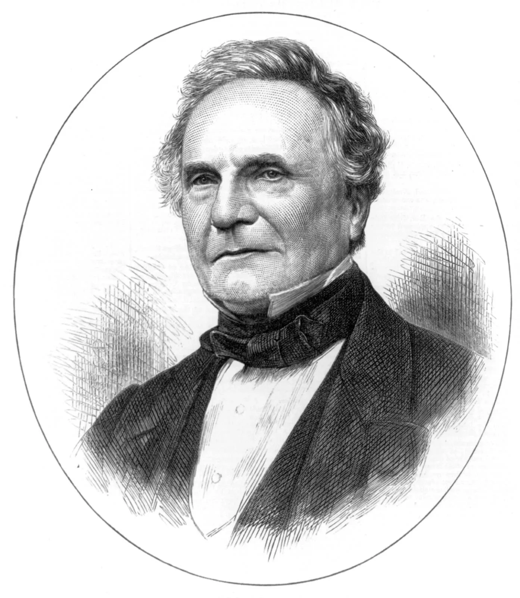

- Charles Babbage was born on December 26, 1791, in London, England.
- Charles Babbage is considers as father of the computer
- He was a renowned mathematician, philosopher, inventor, and mechanical engineer
- He designed the Difference Engine, an automatic mechanical calculator designed to tabulate polynomial functions
- Babbage conceptualized the Analytical Engine, a general-purpose, fully programmable computing device, which is considered a precursor to modern computers
- His work laid the foundational concepts for future developments in computing. Modern computers are built on principles first outlined by Babbage
